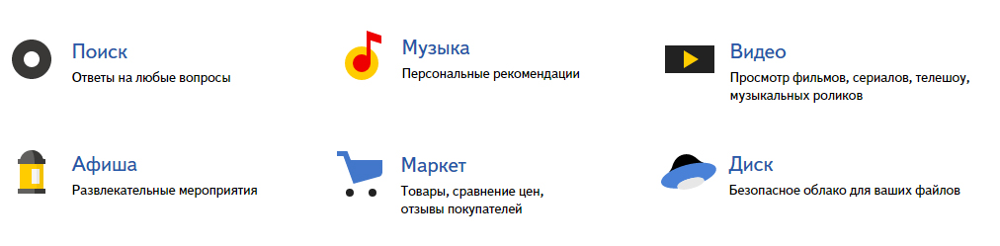
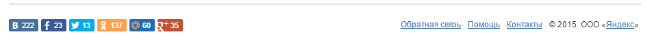

Наведите камеру на незнакомый предмет
Уточните вопрос голосом
Например: Что это? Где купить? Добавить в закладки.
Объект найдется среди 1 077 889 образов
Множество возможностей
Визуальный поиск работает с множеством сервисов Яндекса
Взаимодействуйте результатами поиска
Слушайте на Яндекс Музыке, добавляйте в закладки, ищите в картинках, смотрите на Авто.ру и других сервисах Яндекса.
Работает с сервисами Яндекса

